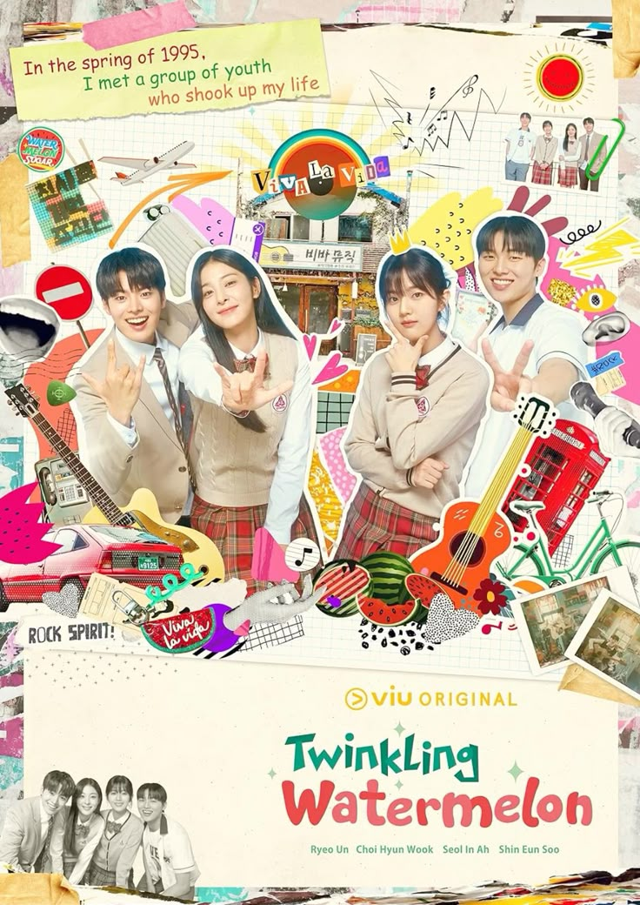

Twinkling Watermelon
What touches me the most in this drama is the unwavering love between the characters. Specifically, how the male lead truly loved the girl who couldn't speak. He didn't just stay by her side; he made a genuine effort to learn sign language just to communicate and understand her world.
It shows that love isn't about words, but about the effort we put in to bridge the silence.
The story becomes even more meaningful when the son travels back in time to his father's youth. Seeing his parents' past—their struggles, their friendships, and how they fell in love—gives a heartbreakingly beautiful perspective on family.
The bond formed within the band and the friendships they built in that era make me realize how precious and "twinkling" our youth can be.